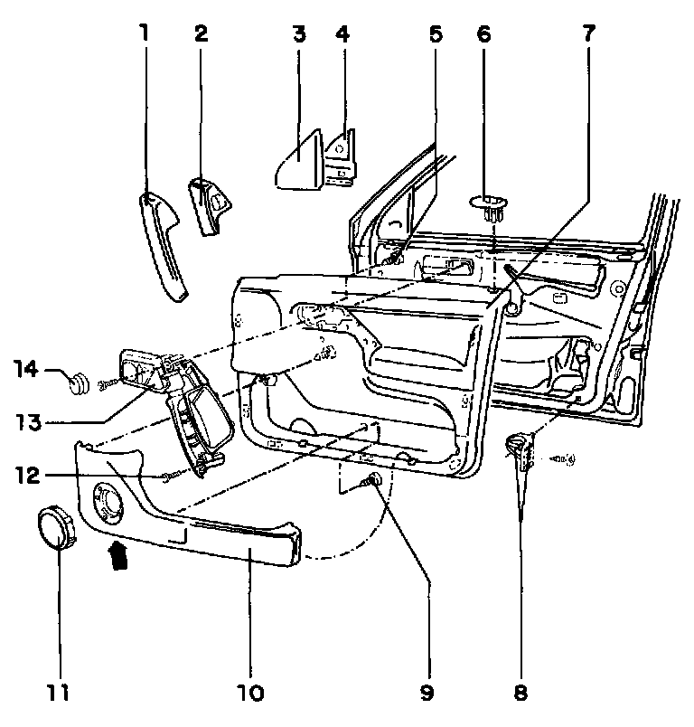
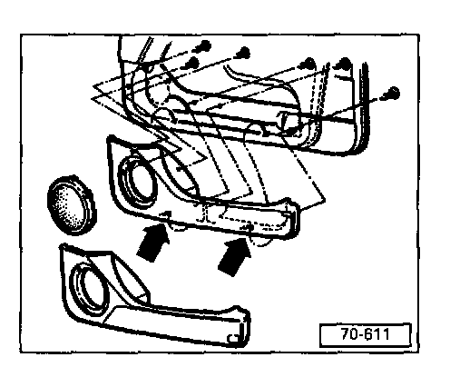

Front Door Panel: Diagrams
Front door trim, removing and installingExploded View:

1. Cover
Clipped into door/door pull
2. Cover
For vehicles with power windows
Clipped into door/door pull
3. Cover plate
Pull off of door frame (clipped)
4. Insulating plate
5. Screw
To secure door handle
Quantity: 6
6. Trim piece
According to equipment level, with LED
7. Door trim panel
Removal, refer to Front Door Trim, Removing and Installing
Removing window crank, refer to Window Crank Handle Service and Repair
8. Securing clip
Two-piece
9. Screw
To secure door tray
Quantity: 6
10. Door tray
Secured by screws through rear of trim
Speaker mounted to door tray
11. Speaker cover
To remove press down retaining lugs using screwdriver through opening in door tray (arrow)
12. Screw
13. Door handle
Secured by screw through rear of trim
14. Control knob
Connected on inside opener plate
Removing door tray with speaker

Door trim panel removed
Unclip speaker cover.
Remove screws and lift door tray upward out of openings (arrows).